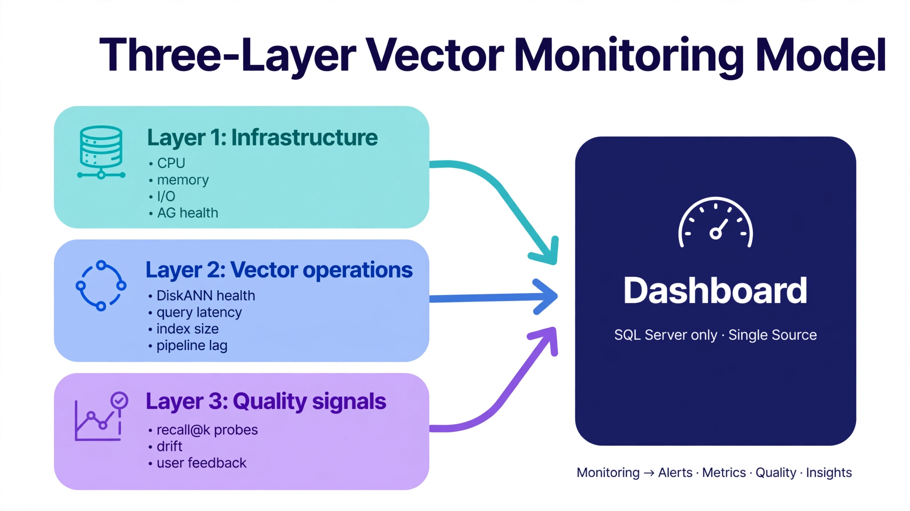

Chapter 40: Vector Database Monitoring Dashboard
The Three-Layer Monitoring Model
Monitoring a vector database in production is not the same as monitoring a relational database. The familiar metrics — query throughput, lock waits, buffer hit ratio, Always On sync health — still matter when the underlying engine is SQL Server, but they tell you nothing about the health of your embedding pipeline, the quality of your search results, or whether your DiskANN indexes are serving queries efficiently under load. This chapter brings together everything from earlier in the book and shows you how to build a dashboard that covers all three layers: infrastructure metrics, vector-specific operational metrics, and application-layer quality signals. By the end, you will have runnable T-SQL for SQL Server DMV and Query Store monitoring, a Python quality probe that runs continuously against your RAG pipeline, and a pattern for surfacing drift and recall degradation before your users notice.

Each of the three pastel zones feeds the same dashboard, and the arrows all point one way for a reason: a healthy system needs all three layers before you can claim it is healthy. Layer 1 is your existing SQL Server infrastructure monitoring — CPU, memory, I/O, and availability group health. Layer 2 is new territory: DiskANN index health, vector query latency from Query Store, index size, and embedding pipeline lag. Layer 3 is the one teams skip and regret — recall@k probes, embedding drift, and user feedback proving the system still retrieves the right documents. The dashboard in the center is where the three converge; if only the top two are green, you are monitoring the engine, not the product.
Layer 1 is your existing SQL Server monitoring — keep it. Layer 2 is new: DiskANN index health, vector query latency from Query Store, embedding pipeline lag. Layer 3 is the one teams skip and regret: continuous quality probes that prove the system still retrieves the right documents.
---
Instrumenting SQL Server Vectors with DMVs and Query Store
SQL Server exposes vector workload telemetry through the same DMVs and Query Store you already use — no exporter required. The queries below form the Layer 2 core.
-- SQL Server 2025: Layer 2 vector operations monitoring
-- 1. DiskANN index space and growth (run hourly, trend in Grafana)
SELECT DB_NAME() AS DbName, i.name AS IndexName,
SUM(s.used_page_count) * 8 / 1024 AS UsedMB,
SUM(s.row_count) AS VectorRows
FROM sys.indexes AS i
JOIN sys.dm_db_partition_stats AS s
ON s.object_id = i.object_id AND s.index_id = i.index_id
WHERE i.object_id = OBJECT_ID(N'dbo.DocumentChunks')
GROUP BY i.name;
-- 2. Vector query latency from Query Store (top offenders, last hour)
SELECT TOP (10) qsqt.query_sql_text,
SUM(qrs.count_executions) AS Execs,
SUM(qrs.avg_duration * qrs.count_executions) / 1000.0 AS TotalMs,
MAX(qrs.max_duration) / 1000.0 AS MaxMs
FROM sys.query_store_query_text AS qsqt
JOIN sys.query_store_query AS qsq ON qsq.query_text_id = qsqt.query_text_id
JOIN sys.query_store_plan AS qsp ON qsp.query_id = qsq.query_id
JOIN sys.query_store_runtime_stats AS qrs ON qrs.plan_id = qsp.plan_id
WHERE qsqt.query_sql_text LIKE '%VECTOR\_DISTANCE%' ESCAPE '\'
OR qsqt.query_sql_text LIKE '%VECTOR\_SEARCH%' ESCAPE '\'
GROUP BY qsqt.query_sql_text
ORDER BY TotalMs DESC;
-- 3. Embedding pipeline lag: unprocessed queue depth + oldest item age
SELECT COUNT(*) AS PendingJobs,
DATEDIFF(minute, MIN(EnqueuedAt), SYSUTCDATETIME()) AS OldestAgeMin
FROM dbo.EmbeddingJobs
WHERE Status = 'pending';
-- 4. AG replica health for the vector database (Chapter 35)
SELECT ars.role_desc AS Role, ars.synchronization_health_desc AS Health,
drs.log_send_queue_size AS SendQueueKB,
drs.redo_queue_size AS RedoQueueKB
FROM sys.dm_hadr_availability_replica_states AS ars
JOIN sys.dm_hadr_database_replica_states AS drs
ON drs.replica_id = ars.replica_id AND drs.group_id = ars.group_id
WHERE drs.database_id = DB_ID(N'VectorRagDb');
This uses Query Store rather than wrapping every query with timing code — it captures the full query load from all connections, not just the ones your application explicitly instruments. Keep Query Store in read-write mode with a sensible retention (30 days is a good default for vector workloads) so latency trends survive long enough to correlate with recall-probe history.
For Grafana, expose these as a Prometheus pushgateway feed or a SQL data source: a collector script runs the four queries every 60 seconds via pyodbc and pushes gauges (sqlserver_vector_index_mb, sqlserver_vector_query_ms, sqlserver_embedding_queue_depth). The PromQL for the dashboard's slowest-query panel is then trivial:
# Prometheus alerting rules (vector_alerts.yaml)
# Warn when p99-ish vector query latency exceeds 200ms for 10 minutes:
# expr: max_over_time(sqlserver_vector_query_max_ms[10m]) > 200
# Crit when the embedding queue stops draining (depth growing 30 min):
# expr: deriv(sqlserver_embedding_queue_depth[30m]) > 0
# Crit when DiskANN index size grows >20%/day unexpectedly (runaway ingest):
# expr: deriv(sqlserver_vector_index_mb[1d]) > 0.2 * sqlserver_vector_index_mb---
Monitoring Managed Services via Their Native APIs
Where part of the estate lives in Pinecone, Weaviate, or Qdrant, fold their native metrics into the same dashboard rather than maintaining a second one. Pinecone exposes index stats (vector count, dimension, index fullness) via its API; Weaviate exposes a Prometheus endpoint natively; Qdrant exposes cluster telemetry at /metrics.
# Python — managed-service metrics into the same pushgateway
# Requires: pinecone-client>=3.0, requests, prometheus_client, pyodbc
import os
from pinecone import Pinecone
from prometheus_client import CollectorRegistry, Gauge, push_to_gateway
registry = CollectorRegistry()
pc_fullness = Gauge("pinecone_index_fullness_ratio",
"Index fullness 0-1", registry=registry)
pc_vectors = Gauge("pinecone_vector_count",
"Total vectors", ["index"], registry=registry)
pc = Pinecone(api_key=os.environ["PINECONE_API_KEY"])
for desc in pc.list_indexes():
stats = pc.Index(desc.name).describe_index_stats()
pc_vectors.labels(index=desc.name).set(stats["total_vector_count"])
pc_fullness.set(stats.get("index_fullness", 0.0))
# Fullness > 0.8 on a pod-based index means scale the pods
# BEFORE latency degrades — this is the managed equivalent of
# watching DiskANN index growth in the previous section.
push_to_gateway("localhost:9091", job="managed_vector_metrics",
registry=registry)
# Weaviate needs no collector: point Prometheus at its native endpoint
# (PROMETHEUS_MONITORING_ENABLED=true) and alert on
# weaviate_async_replication_queue_length and query latency histograms.
---
Embedding Quality and Recall Probes
Infrastructure metrics tell you the system is running. Quality probes tell you it is working. A probe runs a fixed set of queries with known-good answers against the live retrieval path every five minutes and records recall@k — the earliest warning of index corruption, bad deployments, or embedding drift.
# Python — continuous recall probe against SQL Server (pyodbc)
# Requires: pyodbc, openai, prometheus_client, numpy
import json, os, time
import pyodbc, openai
from prometheus_client import CollectorRegistry, Gauge, push_to_gateway
GOLDEN = json.load(open("golden_dataset.json"))
# [{"query": "...", "expected_chunk_ids": [101, 102], "k": 10}, ...]
client = openai.OpenAI()
conn = pyodbc.connect(os.environ["SQLSERVER_DSN"])
def recall_at_k(retrieved, expected, k):
return len(set(retrieved[:k]) & set(expected)) / max(len(expected), 1)
def probe():
registry = CollectorRegistry()
g_recall = Gauge("rag_recall_at_k", "Probe recall@k",
["query_id"], registry=registry)
g_dist = Gauge("rag_top1_distance", "Top-1 cosine distance",
["query_id"], registry=registry)
cur = conn.cursor()
for i, q in enumerate(GOLDEN):
emb = client.embeddings.create(
input=[q["query"]],
model="text-embedding-3-small").data[0].embedding
vec = "[" + ",".join(str(v) for v in emb) + "]"
rows = cur.execute("""SELECT TOP (?) ChunkId,
VECTOR_DISTANCE('cosine', Embedding,
CAST(? AS VECTOR(1536))) AS d
FROM dbo.DocumentChunks
WHERE TenantId = ?
ORDER BY d""",
(q["k"], vec, q.get("tenant_id", 1))).fetchall()
retrieved = [r[0] for r in rows]
g_recall.labels(query_id=str(i)).set(
recall_at_k(retrieved, q["expected_chunk_ids"], q["k"]))
g_dist.labels(query_id=str(i)).set(rows[0][1] if rows else 1.0)
push_to_gateway("localhost:9091", job="rag_quality_probe",
registry=registry)
print(f"[{time.strftime('%H:%M:%S')}] Probe complete: "
f"{len(GOLDEN)} queries")
if __name__ == "__main__":
while True:
probe()
time.sleep(300) # every 5 minutes
Alert on the probe metrics, not just the infrastructure ones: a 5-point drop in mean recall@k sustained over 30 minutes pages the on-call engineer; a single query's top-1 distance drifting upward week over week is the early signal of embedding drift (Chapter 30) or a degraded DiskANN index in need of rebuild.
---
Building the Golden Dataset
The probe is only as good as its golden dataset. Build it deliberately:
dbo.GoldenQueries) rather than a JSON file once it stabilizes — versioned, backed up, auditable.---
Alerting Rules and Escalation Thresholds
Two-tier thresholds (warning then critical) on every metric that predicts user-facing degradation. The probe alerts are the most important in the whole stack — they are the only ones that fire when the system is running perfectly and returning the wrong answers.
---
Grafana Dashboard Layout
One dashboard, three rows mirroring the three layers:
Quality on top is deliberate: when the 2 AM page fires for a latency spike, the first question is "are users getting wrong answers?" — and the answer is one glance up, not three dashboards over.
---
Handling Embedding Model Rotation
Model rotation is a monitoring event, not just a deployment event (Chapter 30). When the embedding model changes:
sqlserver_backfill_remaining trending to zero is the cutover gate; a stalled backfill pages like any stalled pipeline.---
Putting It All Together: The Monitoring Stack Deployment
A minimal docker-compose.yml wires together Prometheus, the pushgateway, Grafana, the SQL Server collector, and the recall probe:
# docker-compose.yml — vector monitoring stack
services:
prometheus:
image: prom/prometheus:v2.51.0
volumes:
- ./prometheus.yml:/etc/prometheus/prometheus.yml:ro
- ./vector_alerts.yaml:/etc/prometheus/rules/vector_alerts.yaml:ro
- prometheus_data:/prometheus
command:
- "--config.file=/etc/prometheus/prometheus.yml"
ports: ["9090:9090"]
pushgateway:
image: prom/pushgateway:v1.7.0
ports: ["9091:9091"]
grafana:
image: grafana/grafana:10.4.0
environment:
GF_SECURITY_ADMIN_PASSWORD: "${GRAFANA_ADMIN_PASSWORD}"
volumes: ["grafana_data:/var/lib/grafana"]
ports: ["3000:3000"]
depends_on: [prometheus]
sqlserver_collector: # runs the DMV/Query Store queries hourly
build: ./collectors
environment:
SQLSERVER_DSN: "${SQLSERVER_DSN}"
PUSHGATEWAY: "pushgateway:9091"
command: python sqlserver_vector_collector.py
rag_quality_probe: # recall probe every 5 minutes
build: ./collectors
environment:
SQLSERVER_DSN: "${SQLSERVER_DSN}"
OPENAI_API_KEY: "${OPENAI_API_KEY}"
PUSHGATEWAY: "pushgateway:9091"
command: python rag_quality_probe.py
volumes:
prometheus_data:
grafana_data:The prometheus.yml scrapes the pushgateway (for pushed metrics from all collectors) and Weaviate's native endpoint directly:
# prometheus.yml
global:
scrape_interval: 60s
rule_files:
- /etc/prometheus/rules/*.yaml
scrape_configs:
- job_name: pushgateway # SQL Server collector + probes + Pinecone
static_configs:
- targets: ["pushgateway:9091"]
- job_name: weaviate # native endpoint, no collector needed
static_configs:
- targets: ["weaviate:2112"] # PROMETHEUS_MONITORING_ENABLED=true
- job_name: prometheus_self
static_configs:
- targets: ["localhost:9090"]---
Key Takeaways
QueryOptimizer — Self-Hosted SQL Performance Workbench
EXPLAIN visualizer · Index advisor · Slow query dashboard · SQL Server
Test yourself on this chapter
5 questions · instant scoring · explanations included